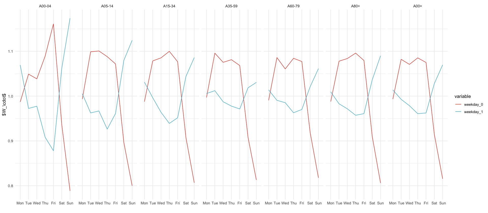
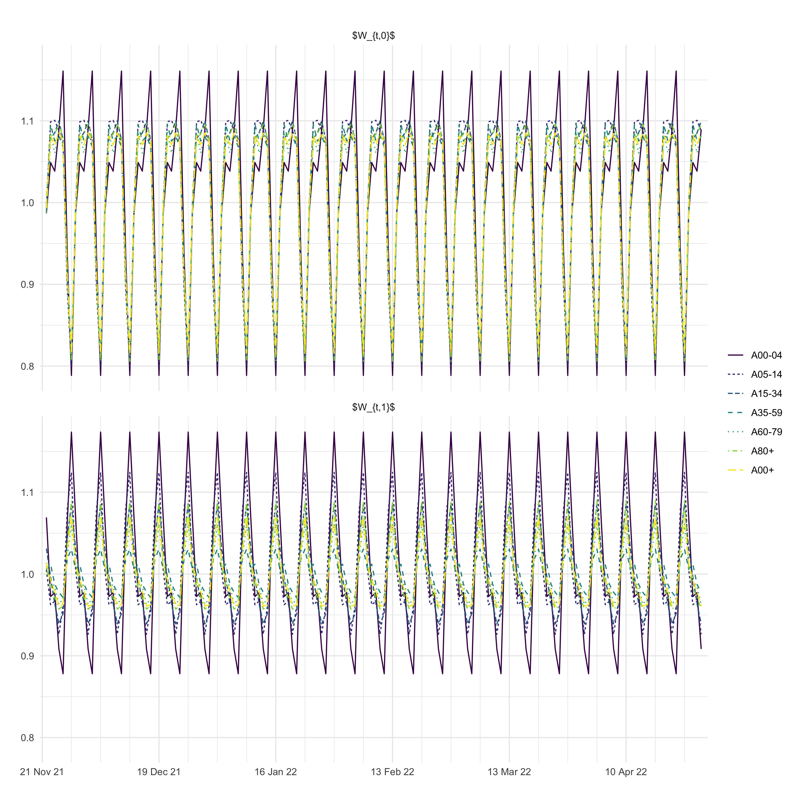

library(here)
source(here("setup.R"))here() starts at /Users/stefan/workspace/work/phd/thesis
library(here)
source(here("setup.R"))here() starts at /Users/stefan/workspace/work/phd/thesis
plt_probs <- read_csv(here("data/processed/seven_day_H_I_by_age.csv")) %>%
mutate(p_sk = h / I * 100) %>%
filter(k <= 3) %>%
filter(s >= ymd('2021-11-22'), s <= ymd('2022-04-29')) %>%
ggplot(aes(s, p_sk, color = factor(k))) +
geom_line() +
facet_wrap(~ fct_relevel(a, age_order_4cols), ncol = 4, labeller = age_group_labeller, scales = "free_y") +
labs(x = "", y = "$\\hat p_{t,k}$ [\\%]") +
scale_color_discrete(name = "k") +
coord_cartesian(ylim = c(NA, NA)) +
scale_y_log10(labels = scales::label_comma()) +
scale_x_date(date_labels = "%b %y", date_breaks = "4 months")
plt_probs
ggsave_tikz(here("tikz/delay_hospitalization_probabilities.tex"))Warning message in scale_y_log10(labels = scales::label_comma()): “log-10 transformation introduced infinite values.” Warning message in scale_y_log10(labels = scales::label_comma()): “log-10 transformation introduced infinite values.”

np <- import("numpy")
predictions <- np$load("/Users/stefan/workspace/work/phd/thesis/data/results/4_hospitalizations/showcase/predictions_age_00-04.npy")
dim(predictions)
dates <- seq(from = ymd("2021-11-22"), to = ymd("2022-04-28"), by = "1 day")
length(dates)
n_delay <- 5
variables <- c(
"prob_hosp",
paste0("p_delay_smooth", seq(n_delay)),
paste0("p_delay", seq(n_delay)),
"weekday_0",
"weekday_1",
"avg_delay"
)
length(variables)Warning message in poetry_config(required_module):
“This project appears to use Poetry for Python dependency management.
However, the 'poetry' command line tool is not available.
reticulate will be unable to activate this project.
Please ensure that 'poetry' is available on the PATH.”df_files <- tibble(fname = list.files(here("data/results/4_hospitalizations/showcase"), full.names = T)) %>%
filter(str_detect(fname, ".npy$")) %>%
# mutate(age_group = paste0("A", str_extract(fname, "\\d\\d-\\d\\d"))) %>%
mutate(age_group = c("A00-04", "A00+", "A05-14", "A15-34", "A35-59", "A60-79", "A80+")) %>%
mutate(n_delay = c(5, 8, 5, 7, 7, 8, 8))
read_age_predictions <- function(fname, n_delay) {
dates <- seq(from = ymd("2021-11-22"), to = ymd("2022-04-28"), by = "1 day")
variables <- c(
"prob_hosp",
paste0("p_delay_smooth", seq(n_delay)),
paste0("p_delay", seq(n_delay)),
"weekday_0",
"weekday_1",
"avg_delay"
)
print(fname)
read_predictions(fname, dates, variables)
}
df_predictions <- df_files %>%
mutate(data = map2(fname, n_delay, read_age_predictions)) %>%
select(-fname, -n_delay) %>%
unnest() %>%
mutate(age_group = ordered_age_group(age_group))[1] "/Users/stefan/workspace/work/phd/thesis/data/results/4_hospitalizations/showcase/predictions_age_00-04.npy"
[1] "/Users/stefan/workspace/work/phd/thesis/data/results/4_hospitalizations/showcase/predictions_age_00+.npy"
[1] "/Users/stefan/workspace/work/phd/thesis/data/results/4_hospitalizations/showcase/predictions_age_05-14.npy"
[1] "/Users/stefan/workspace/work/phd/thesis/data/results/4_hospitalizations/showcase/predictions_age_15-34.npy"
[1] "/Users/stefan/workspace/work/phd/thesis/data/results/4_hospitalizations/showcase/predictions_age_35-59.npy"
[1] "/Users/stefan/workspace/work/phd/thesis/data/results/4_hospitalizations/showcase/predictions_age_60-79.npy"
[1] "/Users/stefan/workspace/work/phd/thesis/data/results/4_hospitalizations/showcase/predictions_age_80+.npy"Warning message:
"`cols` is now required when using `unnest()`.
i Please use `cols = c(data)`."
df_predictions %>%
distinct(variable) %>%
pull()p_smoothed_delays <- df_predictions %>%
select(age_group, date, variable, mean, `0.025`, `0.5`, `0.975`) %>%
filter(str_detect(variable, "p_delay_smooth")) %>%
mutate(variable = str_replace(variable, "p_delay_smooth", "")) %>%
rename(k = variable) %>%
mutate(k = as.numeric(k) - 1) %>%
filter(k <= 3) %>%
ggplot(aes(x = date, y = mean * 100, color = age_group, group = age_group, linetype = age_group)) +
geom_line() +
# geom_ribbon(aes(ymin = `0.025` * 100, ymax = `0.975` * 100, fill = age_group), alpha = 0.2) +
labs(
title = "",
x = "",
y = "$q_{t, k}$ [\\%]",
color = "",
linetype = ""
) +
scale_x_four_weekly() +
facet_wrap(~k, scales = "free_y", nrow = 4, labeller = labeller(k = function(x) str_glue("$ k = {x} $")))
p_smoothed_delays
df_predictions %>%
select(age_group, date, variable, mean, `0.025`, `0.5`, `0.975`) %>%
filter(str_detect(variable, "p_delay_smooth")) %>%
mutate(variable = str_replace(variable, "p_delay_smooth", "")) %>%
rename(k = variable) %>%
mutate(k = as.numeric(k) - 1) %>%
filter(k <= 8) %>%
mutate(k = factor(k)) %>%
select(age_group, date, k, mean) %>%
complete(age_group, date, k, fill = list(mean = 0)) %>%
ggplot(aes(date, mean, fill = k)) +
geom_area(position = position_stack(reverse = T)) +
facet_wrap(~age_group, nrow = 1) +
scale_fill_brewer(palette = "RdYlGn") +
labs(x = "", y = "")
p_hospitalizations <- df_predictions %>%
select(age_group, date, variable, mean, `0.025`, `0.5`, `0.975`) %>%
filter(variable == "prob_hosp") %>%
ggplot(aes(x = date, y = mean * 100, color = age_group, group = age_group, linetype = age_group)) +
geom_line() +
geom_ribbon(aes(ymin = `0.025` * 100, ymax = `0.975` * 100, fill = age_group), alpha = 0.2) +
labs(
title = "",
x = "",
y = " $p_{t}$ [\\%]"
) +
scale_x_four_weekly() +
scale_y_log10() +
theme(legend.position = "none")
p_hospitalizations
df_predictions %>%
select(age_group, date, variable, mean, `0.025`, `0.5`, `0.975`) %>%
filter(str_detect(variable, "weekday")) %>%
ggplot(aes(x = wday(date, label = T, week_start = 1), mean, color = variable, group = variable)) +
stat_summary(fun = mean, geom = "line") +
facet_wrap(~age_group, nrow = 1) +
xlab("") +
ylab("$W_\\cdot$")
p_weekday <- df_predictions %>%
select(age_group, date, variable, mean, `0.025`, `0.5`, `0.975`) %>%
filter(str_detect(variable, "weekday")) %>%
ggplot(aes(x = date, y = mean, color = age_group, group = age_group, linetype = age_group)) +
geom_line() +
# geom_ribbon(aes(ymin = `0.025` * 100, ymax = `0.975` * 100, fill = age_group), alpha = 0.2) +
labs(
title = "",
x = "",
y = "",
linetype = "",
color = ""
) +
scale_x_four_weekly() +
facet_wrap(~variable, nrow = 2, labeller = as_labeller(c("weekday_0" = "$W_{t,0}$", "weekday_1" = "$W_{t,1}$")))
p_weekday
p_avg_delays <- df_predictions %>%
filter(variable == "avg_delay") %>%
ggplot(aes(x = date, y = mean, color = age_group, group = age_group, linetype=age_group)) +
geom_line() +
scale_x_four_weekly() +
labs(x = "", y = "$\\bar{\\tau}_{t}$ [weeks]", color = "", linetype="")h <- 15
w <- 10
options(
repr.plot.width = w,
repr.plot.height = h,
repr.plot.res = 300
)
((p_hospitalizations / p_weekday / p_avg_delays) | p_smoothed_delays) + plot_layout(guides = "collect")
ggsave_tikz(here("tikz/hospitalization_showcase_results.tex"), width = w, height = h)
library(here)
source(here("setup.R"))df_nowcast <- read_csv(here("data/results/4_hospitalizations/nowcast/nowcast.csv"))
start_date <- min(df_nowcast$date)
end_date <- ymd("2022-04-29")
df_nowcast <- df_nowcast %>%
filter(date >= start_date & date <= end_date)add_all_age_groups_to_truth <- function(df) {
all_ages <- df %>%
group_by(case_date) %>%
summarise(value = sum(value), .groups = "drop") %>%
mutate(age_group = "00+") %>%
select(age_group, case_date, value)
rbind(df, all_ages) %>%
arrange(case_date, age_group)
}delay_6_weeks_truth <- read_csv(here("data/raw/all_hosp_age.csv")) %>%
filter(hosp_date - case_date == 6 * 7) %>%
filter(case_date >= start_date, case_date <= end_date) %>%
select(age_group, case_date, value) %>%
add_all_age_groups_to_truth() %>%
filter(age_group == "00+") %>%
select(date = case_date, value)df_ilm_prop42 <- read_csv(here("data/results/4_hospitalizations/nowcast/ilm_prop42.csv")) %>%
mutate(date = ymd(date)) %>%
filter(date >= start_date, date <= end_date)
df_nch_ensemble <- read_csv(here("data/results/4_hospitalizations/nowcast/nch_ensemble.csv")) %>%
mutate(date = ymd(date)) %>%
filter(date >= start_date, date <= end_date)all_df <- rbind(
df_ilm_prop42 %>%
mutate(model = "ILM-prop42"),
df_nch_ensemble %>%
mutate(model = "MeanEnsemble"),
df_nowcast %>%
mutate(model = "SSM")
)ggplot(all_df, aes(date)) +
geom_line(aes(y=mean, color=model)) +
geom_line(aes(x = date, y = value, linetype = "truth"), data = delay_6_weeks_truth) +
labs(x = "", y = "7-day hospitalization incidence", linetype = NULL, fill = NULL) +
scale_x_date(breaks = "1 months", date_labels = "%b %y", expand = expansion(mult = c(0.01, 0.01))) +
facet_wrap(~model, ncol = 1)
plt_nowcast = all_df %>%
ggplot(aes(date)) +
geom_line(aes(y=mean, color=model)) +
geom_ribbon(aes(ymin = `2.5 %`, ymax = `97.5 %`, fill = model), alpha = 0.3) +
geom_line(aes(x = date, y = value, linetype = "truth"), data = delay_6_weeks_truth) +
labs(x = "", y = "7-day hospitalization incidence", linetype = NULL, fill = NULL) +
scale_x_date(breaks = "1 months", date_labels = "%b %y", expand = expansion(mult = c(0.01, 0.01))) +
facet_wrap(~model, ncol = 1) +
# have legend only for the truth line
guides(fill = "none", color = "none", linetype="none") +
theme(legend.position = "bottom")
plt_nowcast
ggsave_tikz(here("tikz/hospitalization_nowcasts_all_models.tikz"))
quantiles <- c(0.025, 0.100, 0.250, 0.500, 0.750, 0.900, 0.975)
# interval score
IS <- function(prob, lower, upper, y) {
(upper - lower) + (y < lower) * 2 / prob * (lower - y) + (y > upper) * 2 / prob * (y - upper)
}
# weighted interval score
WIS <- function(prob, quant, actual) {
K <- length(prob)
# count median twice
prob <- c(prob[seq((K + 1) / 2)], prob[seq((K + 1) / 2, K)])
wk <- prob / 2
lower_quant <- quant[seq((K + 1) / 2)]
upper_quant <- quant[seq(K, (K + 1) / 2, by = -1)]
1 / (K + 1) * sum(wk * IS(prob, lower_quant, upper_quant, actual))
}Use WIS from Wolffram et. al 2023

WIS_decompose <- function(prob, quant, actual) {
# Identify the median forecast
median_idx <- which(prob == 0.5)
median_forecast <- quant[median_idx]
mean_error <- abs(actual - median_forecast)
# Remove median for interval processing
interval_idx <- setdiff(seq_along(prob), median_idx)
prob_intervals <- prob[interval_idx]
quant_intervals <- quant[interval_idx]
K <- length(prob_intervals) / 2
total_weight <- 0.5 + K # 0.5 for median, alpha/2 per interval
sharpness <- 0
overprediction <- 0
underprediction <- 0
for (i in seq_len(K)) {
lower_idx <- i
upper_idx <- length(prob_intervals) - i + 1
alpha <- 2 * prob_intervals[lower_idx]
lower <- quant_intervals[lower_idx]
upper <- quant_intervals[upper_idx]
weight <- alpha / 2
# Interval score components
sharpness <- sharpness + weight * (upper - lower)
underprediction <- underprediction + weight * ifelse(actual > upper, (2/alpha)*(actual - upper), 0)
overprediction <- overprediction + weight * ifelse(actual < lower, (2/alpha)*(lower - actual), 0)
}
normalized_sharpness <- sharpness / total_weight
normalized_underprediction <- underprediction / total_weight
normalized_overprediction <- overprediction / total_weight
normalized_mean_error <- (0.5 * mean_error) / total_weight
wis <- normalized_sharpness + normalized_overprediction + normalized_underprediction + normalized_mean_error
return(list(
wis = wis,
sharpness = normalized_sharpness,
underprediction = normalized_underprediction,
overprediction = normalized_overprediction,
mean_error = normalized_mean_error
))
}delay_6_weeks_truth %>%
inner_join(all_df, by="date") %>%
rename(truth=value) %>%
rowwise() %>%
mutate(
WIS_decompose = list(WIS_decompose(
prob=quantiles,
quant=c(`2.5 %`, `10.0 %`, `25.0 %`, `50.0 %`, `75.0 %`, `90.0 %`, `97.5 %`),
actual= truth
))
) %>%
unnest_wider(WIS_decompose)| date | truth | mean | sd | 2.5 % | 10.0 % | 25.0 % | 50.0 % | 75.0 % | 90.0 % | 97.5 % | model | wis | sharpness | underprediction | overprediction | mean_error |
|---|---|---|---|---|---|---|---|---|---|---|---|---|---|---|---|---|
| <date> | <dbl> | <dbl> | <dbl> | <dbl> | <dbl> | <dbl> | <dbl> | <dbl> | <dbl> | <dbl> | <chr> | <dbl> | <dbl> | <dbl> | <dbl> | <dbl> |
| 2021-11-23 | 10228 | 10245.000 | NA | 9274.000 | 9582 | 9874.000 | 10220 | 10588 | 10940.00 | 11358.00 | ILM-prop42 | 105.82857 | 104.68571 | 0.00000 | 0.00000 | 1.142857 |
| 2021-11-23 | 10228 | 9516.000 | NA | 8543.000 | 8766 | 9100.000 | 9459 | 9864 | 10293.00 | 10867.00 | MeanEnsemble | 328.65714 | 114.80000 | 104.00000 | 0.00000 | 109.857143 |
| 2021-11-23 | 10228 | 9924.819 | 217.76895 | 9400.000 | 9646 | 9783.000 | 9962 | 10133 | 10184.00 | 10206.00 | SSM | 130.12857 | 46.12857 | 46.00000 | 0.00000 | 38.000000 |
| 2021-11-24 | 10328 | 10477.000 | NA | 9484.000 | 9799 | 10099.000 | 10452 | 10828 | 11188.00 | 11615.00 | ILM-prop42 | 124.69286 | 106.97857 | 0.00000 | 0.00000 | 17.714286 |
| 2021-11-24 | 10328 | 9366.000 | NA | 8369.000 | 8734 | 8961.000 | 9316 | 9720 | 10129.00 | 10659.00 | MeanEnsemble | 485.57143 | 110.42857 | 230.57143 | 0.00000 | 144.571429 |
| 2021-11-24 | 10328 | 10380.229 | 452.01200 | 9449.000 | 10002 | 10236.000 | 10357 | 10377 | 11270.00 | 11454.00 | SSM | 64.76429 | 60.62143 | 0.00000 | 0.00000 | 4.142857 |
| 2021-11-25 | 10479 | 10751.000 | NA | 9728.000 | 10053 | 10361.000 | 10725 | 11112 | 11482.00 | 11922.00 | ILM-prop42 | 145.28571 | 110.14286 | 0.00000 | 0.00000 | 35.142857 |
| 2021-11-25 | 10479 | 9183.000 | NA | 8232.000 | 8592 | 8781.000 | 9138 | 9528 | 9926.00 | 10394.00 | MeanEnsemble | 752.48571 | 106.91429 | 454.00000 | 0.00000 | 191.571429 |
| 2021-11-25 | 10479 | 9938.246 | 565.99399 | 9622.000 | 9622 | 9622.000 | 9741 | 9741 | 10975.00 | 11307.00 | SSM | 375.47857 | 59.19286 | 210.85714 | 0.00000 | 105.428571 |
| 2021-11-26 | 10542 | 11640.000 | NA | 10481.000 | 10849 | 11198.000 | 11611 | 12050 | 12470.00 | 12969.00 | ILM-prop42 | 552.80000 | 124.94286 | 0.00000 | 275.14286 | 152.714286 |
| 2021-11-26 | 10542 | 9736.000 | NA | 8631.000 | 8920 | 9260.000 | 9674 | 10132 | 10616.00 | 11213.00 | MeanEnsemble | 370.32857 | 129.18571 | 117.14286 | 0.00000 | 124.000000 |
| 2021-11-26 | 10542 | 10287.936 | 663.93321 | 9421.000 | 9611 | 9664.186 | 10134 | 10688 | 11236.00 | 11804.00 | SSM | 194.86529 | 136.57957 | 0.00000 | 0.00000 | 58.285714 |
| 2021-11-27 | 10549 | 11549.000 | NA | 10390.000 | 10757 | 11106.000 | 11519 | 11959 | 12380.00 | 12881.00 | ILM-prop42 | 482.23571 | 125.09286 | 0.00000 | 218.57143 | 138.571429 |
| 2021-11-27 | 10549 | 9845.000 | NA | 8761.000 | 9002 | 9363.000 | 9779 | 10242 | 10733.00 | 11343.00 | MeanEnsemble | 328.40000 | 130.68571 | 87.71429 | 0.00000 | 110.000000 |
| 2021-11-27 | 10549 | 9941.979 | 789.97866 | 8891.373 | 8953 | 9307.000 | 9836 | 10455 | 11315.00 | 11376.00 | SSM | 295.94733 | 167.23305 | 26.85714 | 0.00000 | 101.857143 |
| 2021-11-28 | 10631 | 11427.000 | NA | 10235.000 | 10612 | 10971.000 | 11395 | 11849 | 12284.00 | 12802.00 | ILM-prop42 | 335.10714 | 128.82143 | 0.00000 | 97.14286 | 109.142857 |
| 2021-11-28 | 10631 | 9390.000 | NA | 8399.000 | 8553 | 8957.000 | 9333 | 9753 | 10181.00 | 10722.00 | MeanEnsemble | 684.82143 | 119.96429 | 379.42857 | 0.00000 | 185.428571 |
| 2021-11-28 | 10631 | 10120.425 | 801.76490 | 9049.000 | 9169 | 9524.000 | 10043 | 10720 | 11155.00 | 11935.73 | SSM | 246.79092 | 162.79092 | 0.00000 | 0.00000 | 84.000000 |
| 2021-11-29 | 10532 | 11273.000 | NA | 10049.000 | 10435 | 10803.000 | 11239 | 11705 | 12153.00 | 12686.00 | ILM-prop42 | 310.77857 | 132.35000 | 0.00000 | 77.42857 | 101.000000 |
| 2021-11-29 | 10532 | 9156.000 | NA | 8164.000 | 8347 | 8723.000 | 9094 | 9509 | 9952.00 | 10519.00 | MeanEnsemble | 785.96429 | 118.82143 | 461.71429 | 0.00000 | 205.428571 |
| 2021-11-29 | 10532 | 10596.912 | 947.50385 | 9342.000 | 9522 | 9882.000 | 10308 | 11305 | 11849.00 | 12236.00 | SSM | 220.80000 | 188.80000 | 0.00000 | 0.00000 | 32.000000 |
| 2021-11-30 | 10428 | 11230.000 | NA | 10035.000 | 10412 | 10771.000 | 11197 | 11653 | 12091.00 | 12613.00 | ILM-prop42 | 337.24286 | 129.38571 | 0.00000 | 98.00000 | 109.857143 |
| 2021-11-30 | 10428 | 10179.000 | NA | 8925.000 | 9228 | 9604.000 | 10071 | 10635 | 11236.00 | 12030.00 | MeanEnsemble | 204.19286 | 153.19286 | 0.00000 | 0.00000 | 51.000000 |
| 2021-11-30 | 10428 | 10272.902 | 671.13866 | 9169.000 | 9682 | 9830.000 | 10109 | 10468 | 11178.52 | 11642.00 | SSM | 151.56485 | 105.99342 | 0.00000 | 0.00000 | 45.571429 |
| 2021-12-01 | 10207 | 10958.000 | NA | 9721.000 | 10108 | 10479.000 | 10921 | 11396 | 11855.00 | 12404.00 | ILM-prop42 | 314.29286 | 134.57857 | 0.00000 | 77.71429 | 102.000000 |
| 2021-12-01 | 10207 | 9507.000 | NA | 8465.000 | 8804 | 9041.000 | 9444 | 9892 | 10365.00 | 10888.00 | MeanEnsemble | 321.69286 | 122.69286 | 90.00000 | 0.00000 | 109.000000 |
| 2021-12-01 | 10207 | 9621.779 | 691.52404 | 8415.000 | 8565 | 9323.000 | 9619 | 9967 | 10242.00 | 11382.03 | SSM | 267.67879 | 115.10736 | 68.57143 | 0.00000 | 84.000000 |
| 2021-12-02 | 10216 | 10515.000 | NA | 9258.000 | 9648 | 10024.000 | 10474 | 10961 | 11434.00 | 12002.00 | ILM-prop42 | 174.41429 | 137.55714 | 0.00000 | 0.00000 | 36.857143 |
| 2021-12-02 | 10216 | 9066.000 | NA | 8084.000 | 8458 | 8641.000 | 9016 | 9431 | 9836.00 | 10297.00 | MeanEnsemble | 615.89286 | 111.60714 | 332.85714 | 0.00000 | 171.428571 |
| 2021-12-02 | 10216 | 9819.809 | 51.88439 | 9769.000 | 9769 | 9769.000 | 9769 | 9872 | 9872.00 | 9872.00 | SSM | 369.75000 | 11.03571 | 294.85714 | 0.00000 | 63.857143 |
| ⋮ | ⋮ | ⋮ | ⋮ | ⋮ | ⋮ | ⋮ | ⋮ | ⋮ | ⋮ | ⋮ | ⋮ | ⋮ | ⋮ | ⋮ | ⋮ | ⋮ |
| 2022-04-20 | 6497 | 5002.000 | NA | 4805.000 | 4870 | 4930 | 4999 | 5070 | 5137.000 | 5214 | ILM-prop42 | 1397.40714 | 20.5500000 | 1162.85714 | 0.00000 | 214.000000 |
| 2022-04-20 | 6497 | 5769.000 | NA | 4926.000 | 5125 | 5354 | 5673 | 6083 | 6536.000 | 7159 | MeanEnsemble | 344.33571 | 108.3357143 | 118.28571 | 0.00000 | 117.714286 |
| 2022-04-20 | 6497 | 5205.512 | 236.72890 | 4884.000 | 4982 | 4990 | 5088 | 5553 | 5553.000 | 5558 | SSM | 1070.34286 | 61.3428571 | 807.71429 | 0.00000 | 201.285714 |
| 2022-04-21 | 6678 | 5421.000 | NA | 5226.000 | 5291 | 5350 | 5419 | 5489 | 5556.000 | 5632 | ILM-prop42 | 1159.40000 | 20.4000000 | 959.14286 | 0.00000 | 179.857143 |
| 2022-04-21 | 6678 | 7412.000 | NA | 5941.000 | 6262 | 6640 | 7196 | 7929 | 8805.000 | 10162 | MeanEnsemble | 268.87857 | 194.8785714 | 0.00000 | 0.00000 | 74.000000 |
| 2022-04-21 | 6678 | 5848.341 | 102.31164 | 5823.000 | 5823 | 5823 | 5823 | 5828 | 5828.000 | 6101 | SSM | 775.20000 | 2.4857143 | 650.57143 | 0.00000 | 122.142857 |
| 2022-04-22 | 6639 | 5475.000 | NA | 5300.000 | 5358 | 5411 | 5473 | 5537 | 5596.000 | 5665 | ILM-prop42 | 1076.12143 | 18.4071429 | 891.14286 | 0.00000 | 166.571429 |
| 2022-04-22 | 6639 | 7060.000 | NA | 6016.000 | 6246 | 6533 | 6932 | 7436 | 8020.000 | 8912 | MeanEnsemble | 177.72857 | 135.8714286 | 0.00000 | 0.00000 | 41.857143 |
| 2022-04-22 | 6639 | 6311.532 | 304.94940 | 6101.000 | 6101 | 6195 | 6204 | 6375 | 6561.000 | 7432 | SSM | 195.36429 | 35.5071429 | 97.71429 | 0.00000 | 62.142857 |
| 2022-04-23 | 7282 | 6949.000 | NA | 6691.000 | 6776 | 6855 | 6945 | 7039 | 7127.000 | 7228 | ILM-prop42 | 204.29286 | 27.0071429 | 129.14286 | 0.00000 | 48.142857 |
| 2022-04-23 | 7282 | 8025.000 | NA | 6921.000 | 7191 | 7489 | 7919 | 8429 | 8992.000 | 9804 | MeanEnsemble | 289.33571 | 139.1928571 | 0.00000 | 59.14286 | 91.000000 |
| 2022-04-23 | 7282 | 7304.925 | 316.34075 | 6826.145 | 6974 | 7050 | 7222 | 7470 | 7699.000 | 8175 | SSM | 68.92039 | 60.3489628 | 0.00000 | 0.00000 | 8.571429 |
| 2022-04-24 | 7264 | 7002.000 | NA | 6722.000 | 6814 | 6900 | 6998 | 7101 | 7196.000 | 7307 | ILM-prop42 | 133.45000 | 29.4500000 | 66.00000 | 0.00000 | 38.000000 |
| 2022-04-24 | 7264 | 7346.000 | NA | 6560.000 | 6750 | 6973 | 7285 | 7638 | 8016.000 | 8549 | MeanEnsemble | 100.87857 | 97.8785714 | 0.00000 | 0.00000 | 3.000000 |
| 2022-04-24 | 7264 | 8677.240 | 597.39840 | 7555.000 | 8232 | 8439 | 8470 | 8953 | 9447.551 | 10375 | SSM | 959.30147 | 91.5871794 | 0.00000 | 695.42857 | 172.285714 |
| 2022-04-25 | 7284 | 7068.000 | NA | 6759.000 | 6861 | 6955 | 7063 | 7176 | 7281.000 | 7403 | ILM-prop42 | 95.67143 | 32.3857143 | 31.71429 | 0.00000 | 31.571429 |
| 2022-04-25 | 7284 | 7201.000 | NA | 6431.000 | 6627 | 6851 | 7141 | 7476 | 7842.000 | 8354 | MeanEnsemble | 113.52143 | 93.0928571 | 0.00000 | 0.00000 | 20.428571 |
| 2022-04-25 | 7284 | 8636.296 | 65.90022 | 8625.000 | 8625 | 8635 | 8635 | 8635 | 8635.000 | 8635 | SSM | 1345.64286 | 0.3571429 | 0.00000 | 1152.28571 | 193.000000 |
| 2022-04-26 | 8245 | 9536.000 | NA | 9059.000 | 9216 | 9361 | 9529 | 9703 | 9866.000 | 10054 | ILM-prop42 | 1062.39286 | 50.1071429 | 0.00000 | 828.85714 | 183.428571 |
| 2022-04-26 | 8245 | 9095.000 | NA | 8059.000 | 8346 | 8642 | 9018 | 9463 | 9951.000 | 10556 | MeanEnsemble | 375.05000 | 122.3357143 | 0.00000 | 142.28571 | 110.428571 |
| 2022-04-26 | 8245 | 10300.299 | 722.85582 | 9064.000 | 9800 | 9854 | 10133 | 10645 | 11637.000 | 11971 | SSM | 1537.46429 | 129.7500000 | 0.00000 | 1138.00000 | 269.714286 |
| 2022-04-27 | 7450 | 9038.000 | NA | 8555.000 | 8714 | 8861 | 9030 | 9207 | 9371.000 | 9562 | ILM-prop42 | 1356.39286 | 50.6785714 | 0.00000 | 1080.00000 | 225.714286 |
| 2022-04-27 | 7450 | 8341.000 | NA | 7432.000 | 7683 | 7947 | 8283 | 8674 | 9077.000 | 9591 | MeanEnsemble | 434.75000 | 107.1785714 | 0.00000 | 208.57143 | 119.000000 |
| 2022-04-27 | 7450 | 9007.016 | 439.31929 | 8327.000 | 8374 | 8769 | 9036 | 9123 | 9683.000 | 9860 | SSM | 1191.63571 | 73.6357143 | 0.00000 | 891.42857 | 226.571429 |
| 2022-04-28 | 6939 | 8157.000 | NA | 7724.000 | 7866 | 7998 | 8150 | 8308 | 8457.000 | 8629 | ILM-prop42 | 1010.20714 | 45.4928571 | 0.00000 | 791.71429 | 173.000000 |
| 2022-04-28 | 6939 | 7955.000 | NA | 7084.000 | 7315 | 7570 | 7899 | 8270 | 8668.000 | 9169 | MeanEnsemble | 569.83571 | 103.5500000 | 0.00000 | 329.14286 | 137.142857 |
| 2022-04-28 | 6939 | 7523.301 | 114.58949 | 7500.000 | 7500 | 7500 | 7524 | 7524 | 7524.000 | 7524 | SSM | 567.00000 | 2.5714286 | 0.00000 | 480.85714 | 83.571429 |
| 2022-04-29 | 6562 | 7371.000 | NA | 6991.000 | 7115 | 7231 | 7364 | 7504 | 7635.000 | 7787 | ILM-prop42 | 626.32857 | 40.0428571 | 0.00000 | 471.71429 | 114.571429 |
| 2022-04-29 | 6562 | 7307.000 | NA | 6538.000 | 6747 | 6973 | 7258 | 7585 | 7927.000 | 8360 | MeanEnsemble | 360.15714 | 90.4428571 | 0.00000 | 170.28571 | 99.428571 |
| 2022-04-29 | 6562 | 7442.582 | 113.15790 | 7351.000 | 7351 | 7436 | 7436 | 7436 | 7476.000 | 7784 | SSM | 832.09286 | 6.6642857 | 0.00000 | 700.57143 | 124.857143 |
df <- delay_6_weeks_truth %>%
inner_join(all_df, by="date") %>%
rename(truth=value) %>%
rowwise() %>%
mutate(
WIS_decompose = list(WIS_decompose(
prob=quantiles,
quant=c(`2.5 %`, `10.0 %`, `25.0 %`, `50.0 %`, `75.0 %`, `90.0 %`, `97.5 %`),
actual= truth
))
) %>%
unnest_wider(WIS_decompose) %>%
group_by(model) %>%
summarize(
mae = mean(abs(mean - truth), na.rm = TRUE),
coverage_95 = mean(`2.5 %` <= truth & truth <= `97.5 %`, na.rm = TRUE),
coverage_50 = mean(`25.0 %` <= truth & truth <= `75.0 %`, na.rm = TRUE),
WIS = mean(wis),
sharpness = mean(sharpness),
underprediction = mean(underprediction),
overprediction = mean(overprediction),
mean_error = mean(mean_error),
length_95 = mean(`97.5 %` - `2.5 %`, na.rm = TRUE),
length_50 = mean(`75.0 %` - `25.0 %`, na.rm = TRUE),
)
df_table_performance <- df %>%
select(-model) %>% # Remove model column temporarily
mutate(coverage_50 = coverage_50 * 100) %>%
mutate(coverage_95 = coverage_95 * 100) %>%
rename(
`Mean Absolute Error` = mae,
`Coverage 50% PI [%]` = coverage_50,
`Coverage 95% PI [%]` = coverage_95,
`WIS` = WIS,
`Sharpness` = sharpness,
`Underprediction` = underprediction,
`Overprediction` = overprediction,
) %>%
select(-length_95, -length_50, -mean_error) %>%
t() %>% # Transpose
as.data.frame() %>% # Convert to data frame
rownames_to_column(var = "name") %>% # Move row names to a column
setNames(c("metric", "ILM-prop42", "MeanEnsemble", "SSM"))df_table_performance| metric | ILM-prop42 | MeanEnsemble | SSM |
|---|---|---|---|
| <chr> | <dbl> | <dbl> | <dbl> |
| Mean Absolute Error | 589.32278 | 502.91139 | 526.39546 |
| Coverage 95% PI [%] | 68.98734 | 86.70886 | 67.72152 |
| Coverage 50% PI [%] | 42.40506 | 46.20253 | 29.11392 |
| WIS | 377.58133 | 282.67052 | 352.07059 |
| Sharpness | 101.37156 | 110.21302 | 75.30180 |
| Underprediction | 33.91139 | 40.52803 | 100.46889 |
| Overprediction | 162.52984 | 61.63472 | 97.02961 |
txt_performance <- df_table_performance %>%
mutate(across(where(is.numeric), ~ round(.x, 1))) %>%
setNames(c("", "ILM-prop42", "MeanEnsemble", "SSM")) %>%
kbl(format='latex', booktabs = T) %>%
pack_rows("WIS components", 5, 7) %>%
column_spec(2, bold =c(F,F,F,F,F,T,F)) %>%
column_spec(3, bold =c(T,T,T,T,F,F,T)) %>%
column_spec(4, bold =c(F,F,F,F,T,F,F))
# write txt_performance to file
txt_performance %>%
write_lines(here("tables/df_table_performance.tex"))txt_performance
\begin{tabular}[t]{l>{}r>{}r>{}r}
\toprule
& ILM-prop42 & MeanEnsemble & SSM\\
\midrule
Mean Absolute Error & 589.3 & \textbf{502.9} & 526.4\\
Coverage 95\% PI [\%] & 69.0 & \textbf{86.7} & 67.7\\
Coverage 50\% PI [\%] & 42.4 & \textbf{46.2} & 29.1\\
WIS & 377.6 & \textbf{282.7} & 352.1\\
\addlinespace[0.3em]
\multicolumn{4}{l}{\textbf{WIS components}}\\
\hspace{1em}Sharpness & 101.4 & 110.2 & \textbf{75.3}\\
\hspace{1em}Underprediction & \textbf{33.9} & 40.5 & 100.5\\
\hspace{1em}Overprediction & 162.5 & \textbf{61.6} & 97.0\\
\bottomrule
\end{tabular}